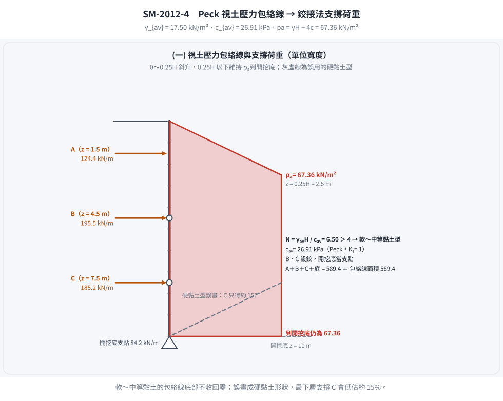

📄 題目正本：考卷原文・附圖・判讀清單（已確認）
SM-2012-4 題目正本
本檔只記錄考卷上寫了什麼、圖上畫了什麼，不含任何解法。解析見同資料夾
SM-2012-4.md。
判讀清單已確認（凍結）；本檔原則上不再修改（改動須回考卷原圖並記 log）。
| 項目 | 內容 |
|---|---|
| 考卷 | raw/exams/SM-2012_土壤力學與基礎設計.pdf 第 1 頁（全一頁），第四題 |
| 考年 | 民國 101 年（2012） |
| 配分 | 25 分（㈠13＋㈡12） |
| 附圖 | 無 |
| 判讀狀態 | 已確認（2026-11-15 關卡一：使用者授權依建議判讀確認；轉錄 2026-11-15；PyMuPDF 110 dpi 全頁目視，本題無附圖；PDF 文字層核對逐字原文；盲讀後才比對既有解析） |
1. 考卷原文（逐字）
四、一處工地擬進行建築物之地下開挖與支撐，該處地層上方為厚 5 m 之砂土層，單位重為 16.5 kN/m³，摩擦角 $\phi$ = 30°。下方為黏土層，飽和單位重為 18.5 kN/m³，不排水剪力強度為 30 kPa，地下水面位於二土層之交界。開挖深度為 10 m，寬度為 6 m，擬採用参層支撐，分別位於地表下 1.5、4.5 及 7.5 m 處。㈠畫出該開挖面之視土壓包絡線並計算各層支撐單位寬度所承受之荷重。（13 分）㈡此時開挖底面之抗隆起（heave）安全係數為何？（12 分）
2. 考卷給的公式、附表與參數
- 砂土：厚 5 m、$\gamma$ = 16.5 kN/m³、$\phi$ = 30°。
- 黏土：$\gamma_{sat}$ = 18.5 kN/m³、$S_u$ = 30 kPa。
- 地下水面：砂／黏土交界（地表下 5 m）。
- 開挖深 10 m、寬 6 m；三層支撐在地表下 1.5、4.5、7.5 m（「参層」照考卷原文）。
- 沒有給：$\gamma_w$、開挖長度、黏土層厚度（開挖面下是否有硬層）、地表超載、砂黏互層視土壓力的處理方式、抗隆起公式。
- 卷首注意事項：㈠可以使用電子計算器。㈡不必抄題，作答時請將試題題號及答案依照順序寫在試卷上，於本試題上作答者，不予計分。㈢本試題之相關公式、物理常數及設計參數未提及時，請自行合理推斷與假設。
3. 附圖
本題無附圖。
4. 判讀清單
| # | 項目 | 判讀 | 圖上／題文依據 | 把握 |
|---|---|---|---|---|
| 1 | 開挖長度 | 考卷未給；解讀為長條開挖（平面應變，$B/L \approx 0$） | 題文只給寬度 6 m | 不確定（解讀；影響㈡答案，請確認）；使用者授權依建議確認 |
| 2 | 層序 | 0～5 m 砂土、5 m 以下黏土；地下水位在 5 m | 題文 | 確定 |
| 3 | 開挖與支撐 | 開挖 10 m（底在黏土內 5 m）；支撐在 1.5、4.5、7.5 m，最下支撐到開挖底 2.5 m | 題文 | 確定 |
| 4 | 黏土層厚 | 考卷未給；解讀為開挖面下黏土很深（無硬層） | 題文 | 確定（解讀） |
| 5 | 砂土單位重 | 16.5 kN/m³（全層在水位以上） | 題文 | 確定 |
| 6 | 所求㈠ | 視土壓力包絡線與每層支撐單位寬度荷重（kN/m） | 題文 | 確定 |
| 7 | 所求㈡ | 開挖底面抗隆起安全係數 | 題文 | 確定 |
| 8 | 考卷沒有給 | $\gamma_w$、開挖長度、黏土層厚度、地表超載、分層視土壓力與隆起公式的選用 | 全題 | 確定 |
轉錄：2026-11-15（SM-U2-3 題目正本推廣・批 1）
確認：2026-11-15 使用者授權依建議判讀確認（SM-U2-3 題目正本推廣・批 1，關卡一；使用者指示「要我確認的請依你建議」）
考題編號：SM-2012-4
主分類： SM-U2-3 開挖之穩定性分析
副分類： 無
分析法： 混合
標籤： 開挖穩定性 視土壓力 Peck包絡線 等值土壤參數 支撐系統 基盤隆起 安全係數
1. 題目（考卷原文見題目正本）
考卷原文、公式／附表、附圖與判讀清單（已確認）見
SM-2012-4-problem.md。本節只列解題時最容易讀錯的地方與本解使用的記號；題意以題目正本為準。
常見誤讀
| 項目 | 正確判讀 | 常見誤讀 |
|---|---|---|
| 開挖長度 | 考卷只給寬度 6 m，視為長條開挖（題目正本 #1，已確認） | 自行假設長度做三維修正 |
| 地下水位 | 在砂／黏土交界（地表下 5 m），砂土全在水位以上（#2、#5） | 砂土用浮單位重 |
| 支撐配置 | 支撐在 1.5、4.5、7.5 m，最下支撐到開挖底 2.5 m（#3） | 把支撐間距當成等分 |
本解記號： $\gamma_{avg}$、$c_{avg}$ 等值單位重與凝聚力（Peck 1943）；$p_a$ 視土壓力；$FS$ 抗隆起安全係數。
2. 考題核心精神與出題者意圖 (Core Concepts & Examiner's Intent)
本題主要測驗考生處理層狀土層（上砂下黏）開挖時的穩定性分析能力。
- 層狀土層之視土壓力：要求考生知道如何將上層砂土與下層黏土轉換為「等值黏土」參數（Peck 經驗法），進而繪製正確形狀的視土壓包絡線。
- 支撐荷重計算：測驗是否熟悉將土壓力分佈轉化為各層支撐載重的分析手法（鉸接法或影響面積法）。
- 抗隆起（Basal Heave）：針對黏土層基底開挖，要求熟用 Terzaghi 隆起安全係數公式，並且需正確計算滑動面上覆蓋砂土層所提供的抗剪力（$T_{sand}$）。
3. 解題戰略地圖與陷阱分析 (Strategic Roadmap & Trap Analysis)
- 戰略一（等值參數與包絡線）：採用 Peck (1943) 建議之等值參數法。先求全層等值單位重 $\gamma_{avg}$，再求等值不排水剪力強度 $c_{avg}$（需考慮上層砂土側向擠壓提供之等效強度）。計算穩定數 $N = \gamma_{avg}H / c_{avg}$ 判斷其屬於軟黏土。
- 戰略二（支撐載重）：畫出軟～中等黏土型視土壓力包絡線（$0\sim0.25H$ 斜升，$0.25H$ 以下維持定值到開挖底）後，假設相鄰支撐間有鉸接點（彎矩為零），將連續壁視為數段簡支梁，利用靜力平衡求出各支撐點的反力。
- 戰略三（抗隆起）：利用 Terzaghi 基底隆起破壞模型，驅動應力包含上方總覆土重，抵抗力除了黏土層本身的承載力 $N_c S_u$ 外，還必須扣除沿垂直滑動面砂土層與黏土層所提供之總抗剪力 $T$。
- ⚠ 陷阱：
- 砂土層的摩擦角 $\phi = 30^\circ$ 不可忽略，它在求等效 $c_{avg}$ 及抗隆起滑動面抗剪力時扮演關鍵角色。
- 視土壓包絡線對於 $N > 4$ 的軟弱黏土，其經驗公式為 $p_a = \gamma H - 4 m S_u$，若不使用等效 $c_{avg}$ 而直接平均 $S_u$，會導致土壓力被嚴重高估。
3.5 變數層次分析 (Variable Hierarchy Analysis)
最終目標
求出層狀土層開挖之等值視土壓力包絡線、三層支撐荷重，以及開挖底面的抗隆起安全係數。
本題關鍵公式（依計算順序）
等值單位重：
$$ \gamma_{avg} = \frac{\sum \gamma_i H_i}{H} $$
等值凝聚力 (Peck, 1943)：
$$ c_{avg} = \frac{1}{H} \left( \frac{1}{2} \gamma_s H_s^2 K_s \tan\phi_s + S_u H_c \right) $$
穩定數與最大視土壓力：
$$ N = \frac{\boxed{\gamma_{avg}} H}{\boxed{c_{avg}}}, \quad p_a = \boxed{\gamma_{avg}} H \left( 1 - \frac{4 \boxed{c_{avg}}}{\boxed{\gamma_{avg}} H} \right) $$
支撐荷重 (對鉸接點取彎矩)：
$$ \Sigma M_{hinge} = 0 \implies R_i $$
抗隆起安全係數 (Terzaghi)：
$$ FS = \frac{N_c S_u}{\sum \gamma_i H_i - \frac{T}{B'}} \quad \text{其中 } T = \frac{1}{2} K_0 \gamma_s H_s^2 \tan\phi_s + S_u H_c $$
L1：題目直接給定
- 符號 ∣ 數值 ∣ 說明
- $H$ ∣ 10 m ∣ 開挖總深度
- $B$ ∣ 6 m ∣ 開挖寬度
- $H_s$ ∣ 5 m ∣ 上層砂土厚度
- $\gamma_s$ ∣ 16.5 kN/m³ ∣ 上層砂土單位重
- $\phi_s$ ∣ 30^\circ ∣ 上層砂土摩擦角
- $H_c$ ∣ 5 m ∣ 開挖面以上之下層黏土厚度
- $\gamma_c$ ∣ 18.5 kN/m³ ∣ 下層黏土飽和單位重
- $S_u$ ∣ 30 kPa ∣ 黏土不排水剪力強度
L2：需知識點推導
- 符號 ∣ 公式／來源 ∣ 卡關?
- $\gamma_{avg}$ ∣ $\frac{16.5 \times 5 + 18.5 \times 5}{10}$ ∣
- $c_{avg}$ ∣ $\frac{1}{H}(\frac{1}{2}\gamma_s H_s^2 K_s \tan\phi_s + S_u H_c)$ ∣
- $p_a$ ∣ $\gamma_{avg} H - 4 c_{avg}$ ∣
- $T_{sand}$ ∣ $\frac{1}{2} K_0 \gamma_s H_s^2 \tan\phi_s$ ∣
- $FS_{heave}$ ∣ $\frac{5.7 S_u}{\gamma_{avg} H - T/B'}$ ∣
L3：深層知識（不懂就卡住）
- 知識點 ∣ 說明 ∣ 卡關?
- Peck 等值參數法 ∣ 層狀土層時，必須將砂土之抗剪力轉化為等值凝聚力貢獻，常取 $K_s \approx 1.0$。 ∣
- 鉸接點法 (Hinge Method) ∣ 計算支撐荷重時，視連續壁為多段梁，相鄰支撐處設有鉸接點 (彎矩=0) 進行靜力平衡。 ∣
- Terzaghi 隆起模型之 $T$ ∣ 開挖面以上的土層，沿兩側垂直滑動面皆會提供抗剪力 $T$，減輕驅動基底隆起之覆土重。 ∣
4. 步驟化詳細計算過程 (Step-by-Step Detailed Calculation)
(一) 視土壓包絡線與支撐荷重
Step 1：計算等值土壤參數
依據 Peck (1943) 建議，對於上層砂土下層黏土之層狀開挖，應計算等值單位重與等值凝聚力：
等值單位重：
$$ \gamma_{avg} = \frac{\gamma_s H_s + \gamma_c H_c}{H} = \frac{16.5 \times 5 + 18.5 \times 5}{10} = 17.5 \text{ kN/m}^3 $$
等值凝聚力：
$$ c_{avg} = \frac{1}{H} \left( \frac{1}{2} \gamma_s H_s^2 K_s \tan\phi_s + S_u H_c \right) $$
其中 $K_s$ 為砂土之側壓係數，經驗上常取 $K_s \approx 1.0$：
$$ c_{avg} = \frac{1}{10} \left( \frac{1}{2} \times 16.5 \times 5^2 \times 1.0 \times \tan 30^\circ + 30 \times 5 \right) $$
$$ c_{avg} = \frac{1}{10} ( 119.08 + 150 ) = \boxed{26.91 \text{ kPa}} $$
Step 2：判斷土壓包絡線形狀與最大壓力 $p_a$
計算穩定數 $N$：
$$ N = \frac{\gamma_{avg} H}{c_{avg}} = \frac{17.5 \times 10}{26.91} = 6.50 > 4 $$
因 $N > 4$，該層狀系統之視土壓力依軟弱至中度堅硬黏土 (Soft to medium clay) 之包絡線繪製：
$$ p_a = \gamma_{avg} H \left( 1 - \frac{4 c_{avg}}{\gamma_{avg} H} \right) = 17.5 \times 10 - 4 \times 26.91 = 175 - 107.64 = \boxed{67.36 \text{ kPa}} $$
（檢核下限：$0.3 \gamma_{avg} H = 52.5 \text{ kPa} < 67.36 \text{ kPa}$，故取 $67.36 \text{ kPa}$，OK）
Step 3：繪製視土壓力包絡線
依據 Peck (1969) 軟弱至中等黏土包絡線形狀：
- $0 \sim 0.25H$ (即 $0 \sim 2.5\text{m}$)：壓力由 0 漸增至 $67.36 \text{ kPa}$ (三角形)
- $0.25H \sim H$ (即 $2.5 \sim 10\text{m}$)：維持等壓 $67.36 \text{ kPa}$ 直到開挖底 (矩形)
⚠ 只有「堅硬有裂縫黏土」的包絡線才在 $0.75H$ 以下遞減回零；本題 $N = 6.50 > 4$ 判為軟弱至中等黏土，底部不遞減（2026-11-15 勘誤前本解誤畫成遞減三角形，最下層支撐荷重因而低估 15%）。
Step 4：計算各層支撐荷重 (採用鉸接點法)
將連續壁視為於支撐處 (不含頂底) 具有鉸接點之多段簡支梁。設支撐分別為 A(1.5m), B(4.5m), C(7.5m)，基底為 D(10m)。鉸接點設於 B 與 C 點。
策略註解：採用鉸接法可精確滿足力矩平衡，是計算支撐載重的標準嚴謹作法。
-
梁1 (深度 0 ~ 4.5m)，支承於 A(1.5m) 與 B(4.5m)：
土壓力分為兩部分：
$F_{1a}$ (0~2.5m 三角形) = $0.5 \times 2.5 \times 67.36 = 84.2 \text{ kN/m}$，作用於 $z = \frac{2}{3}(2.5) = 1.667 \text{ m}$
$F_{1b}$ (2.5~4.5m 矩形) = $2.0 \times 67.36 = 134.72 \text{ kN/m}$，作用於 $z = 3.5 \text{ m}$
對 B 點(z=4.5m)取彎矩 $\Sigma M_B = 0$：
$$ P_A \times (4.5 - 1.5) = 84.2 \times (4.5 - 1.667) + 134.72 \times (4.5 - 3.5) $$
$$ 3 P_A = 84.2 \times 2.833 + 134.72 \times 1.0 = 238.54 + 134.72 = 373.26 \implies P_A = \boxed{124.4 \text{ kN/m}} $$
由靜力平衡 $\Sigma F = 0$ 得 B 點上方反力 $R_{B1}$：
$$ R_{B1} = (84.2 + 134.72) - 124.42 = 94.5 \text{ kN/m} $$ -
梁2 (深度 4.5 ~ 7.5m)，支承於 B(4.5m) 與 C(7.5m)：
全段受均布壓力 67.36 kPa，跨距 3.0m，呈完全對稱。
總力 $F_2 = 3.0 \times 67.36 = 202.08 \text{ kN/m}$
$$ R_{B2} = R_{C1} = 202.08 / 2 = 101.0 \text{ kN/m} $$ -
梁3 (深度 7.5 ~ 10m)，支承於 C(7.5m) 與 D(10m)：
全段受均布壓力 67.36 kPa（軟～中等黏土包絡線到開挖底維持定值），跨距 2.5m，對稱。
總力 $F_3 = 2.5 \times 67.36 = 168.4 \text{ kN/m}$
$$ R_{C2} = R_D = 168.4 / 2 = 84.2 \text{ kN/m} $$
（$R_D$ 由開挖面以下土壤承受。） -
總結各層支撐承受荷重：
- 第 1 層支撐 (1.5m)：$P_A = \boxed{124.4 \text{ kN/m}}$
- 第 2 層支撐 (4.5m)：$P_B = R_{B1} + R_{B2} = 94.5 + 101.0 = \boxed{195.5 \text{ kN/m}}$
- 第 3 層支撐 (7.5m)：$P_C = R_{C1} + R_{C2} = 101.0 + 84.2 = \boxed{185.2 \text{ kN/m}}$
- 檢核：$124.4 + 195.5 + 185.2 + 84.2_{\text{(開挖底)}} = 589.3 \text{ kN/m}$ ＝ 包絡線面積 $\tfrac12(2.5)(67.36) + 7.5(67.36) = 589.4$ ✓

圖 1 包絡線底部收不收、支撐荷重就差多少。攔的是「軟～中等黏土也在 $0.75H$ 以下遞減回零」：本題 $N = 6.50 > 4$，包絡線維持 $p_a$ 到開挖底，C 支撐 $185.2$ kN/m；誤畫成硬黏土形狀會低估約 15%。
(二) 抗隆起（heave）安全係數
採用 Terzaghi 隆起分析法。
由於未給定基底下方黏土層總厚度，為合理評估且偏向保守，假設黏土層深度足夠深 ($D \ge B/\sqrt{2}$)。
有效滑動土體寬度 $B' = \frac{B}{\sqrt{2}} = \frac{6}{\sqrt{2}} = 4.243 \text{ m}$
Step 1：計算開挖面以上總覆土壓力 $q$
$$ q = \sum \gamma_i H_i = 16.5 \times 5 + 18.5 \times 5 = 175 \text{ kPa} $$
Step 2：計算垂直滑動面上之抗剪力 $T$
滑動面上總抗剪力由上層砂土與下層黏土共同提供 ($T = T_{sand} + T_{clay}$)。
砂土層採用靜止土壓力係數 $K_0 = 1 - \sin 30^\circ = 0.5$：
$$ T_{sand} = \int_{0}^{5} K_0 (\gamma_s z) \tan\phi_s dz = \frac{1}{2} K_0 \gamma_s H_s^2 \tan\phi_s $$
$$ T_{sand} = 0.5 \times 0.5 \times 16.5 \times 5^2 \times \tan 30^\circ = 59.54 \text{ kN/m} $$
黏土層採不排水強度：
$$ T_{clay} = S_u H_c = 30 \times 5 = 150 \text{ kN/m} $$
$$ T = 59.54 + 150 = 209.54 \text{ kN/m} $$
Step 3：計算安全係數 $FS$
對於條狀開挖，承載力因數 $N_c = 5.7$。
$$ FS = \frac{N_c S_u}{q - \frac{T}{B'}} = \frac{5.7 \times 30}{175 - \frac{209.54}{4.243}} = \frac{171}{175 - 49.38} = \frac{171}{125.62} = \boxed{1.36} $$
5. 關鍵爭議點與進階探討 (Critical Issues & Advanced Discussion)
- 砂土層等效側壓係數 ($K_s$) 之選用：在 Peck (1943) 的層狀土層等效凝聚力推導中，經驗上常將 $K_s$ 取為 1.0 以符合現地量測之支撐荷重結果。若考生取主動土壓係數 $K_a = 0.333$，則算出的 $c_{avg} = 18.97 \text{ kPa}$，進而導致更大的視土壓力 ($p_a \approx 99 \text{ kPa}$)。但在國家考試中，採用 $K_s = 1.0$ 最符合標準教材 (如施國欽著作) 之規範。
-
抗隆起公式的選擇：本題採用 Terzaghi 公式，其精神在於考慮開挖面兩側土體自重時，須扣除破壞面上的土體抗剪力。若改採 Bjerrum & Eide (1956) 的無因次公式 $FS = N_c S_u / (\gamma H)$，並將 $N_c$ 依深度寬度比修正為 $6.85$ (即 $N_c = 5.14(1+0.2(10/6))$)，則算得 $FS = (6.85 \times 30) / 175 = 1.17$。兩者皆為學理所認可之解法，但 Terzaghi 法能夠明確反映題幹中給定的砂土層摩擦角 ($\phi=30^\circ$) 物理意義，故為最佳推薦解法。
-
包絡線形狀與支撐假設的敏感度（2026-11-15 勘誤補註）：
- 形狀：軟～中等黏土包絡線底部不遞減。若誤畫成硬黏土的底部遞減三角形（本解勘誤前），C 只得 $157.1$ kN/m，低估 15%。
- 下端支承假設：本解把開挖底當支點（C 處設鉸）。若依 Das 等教科書的鉸接法（頂、底兩支撐不設鉸，B～開挖底為支於 B、C 的外伸梁，開挖底不當支點）：A = 124.4、B = 125.4、C = 339.7 kN/m。
- Peck 等值凝聚力的 $n'$：本解式子等同 Peck 原式 $\bar c=\frac{1}{2H}[\gamma_sK_sH_s^2\tan\phi_s+(H-H_s)n'q_u]$ 取 $n'=1.0$；Das 常用 $n'=0.75$ 時 $c_{avg}=23.16$ kPa、$p_a=82.37$ kPa，同本解支撐假設得 A／B／C = 152.2／239.1／226.5 kN/m（開挖底 103.0）。
- 作答時寫明包絡線型式、$n'$ 與鉸接假設即可；現行建築物基礎構造設計規範 8.8.2 的隆起力矩法需要壁底深度，本題未給，無法套用。
修正日期：2026-11-15（§1 改為指向題目正本 SM-2012-4-problem.md；非勘誤）
修正日期：2026-11-15（FIX：包絡線底部不遞減：軟～中等黏土 Peck 包絡線 0.25H 以下維持定值到開挖底，C 支撐 157.1 → 185.2 kN/m（A、B 不變）；§3、§4 Step 3–4、§5 更新；依 wiki/queries/盲解比對-SM-U2-3-B1-2026-11-15.md；腳本 scripts/fixes/2026-11-15_fix_SM-2012-4_envelope_shape.py）
修正日期：2026-11-15（補解題圖解 figs/SM-2012-4-fig-1-envelope-struts.svg，腳本 gen_SM-2012-4.py 可重跑；非勘誤）